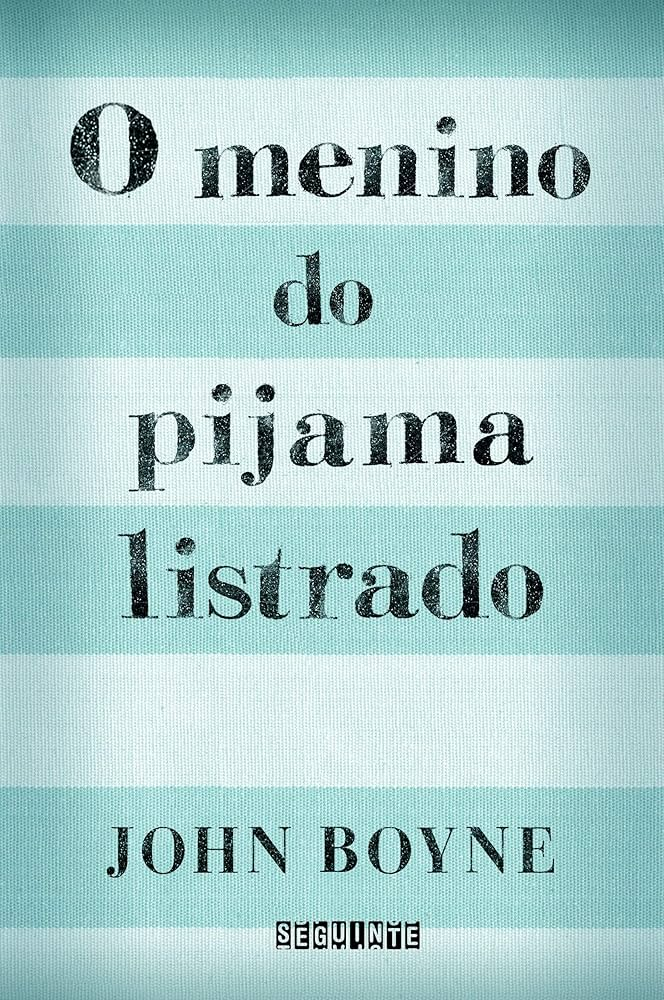
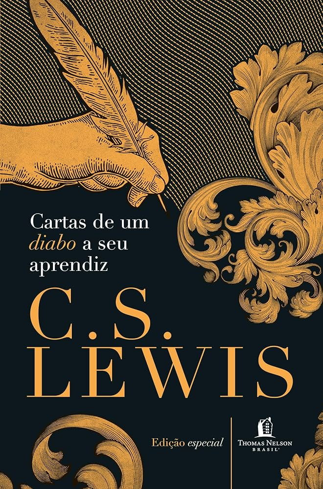
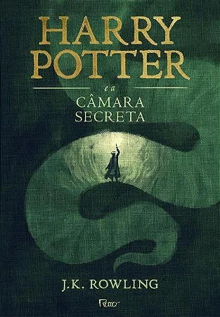
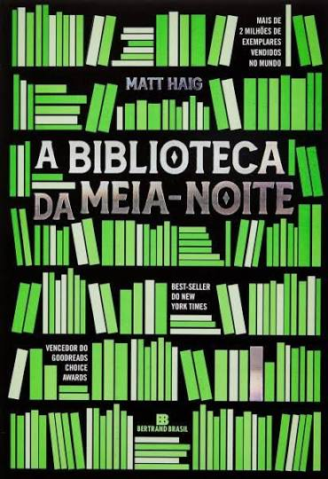

Natally Rafaela


Cada livro desta lista deixou uma marca especial. São histórias que me fizeram refletir, sonhar e ver o mundo com outros olhos. Aqui está meu ranking pessoal!

John Boyne
⭐ 10/10
Gêneros: História, Drama e Guerra

C. S. Lewis
⭐ 9,5/10
Gêneros: Filosofia, Religião e Clássico

J. K. Rowling
⭐ 9/10
Fantasia • Aventura • Magia
C. C. Hunter
⭐ 8,5/10
Gêneros: Romance, Aventura e Drama Juvenil

Matt Haig
⭐ 8/10
Gêneros: Ficção, Reflexão e Filosofia